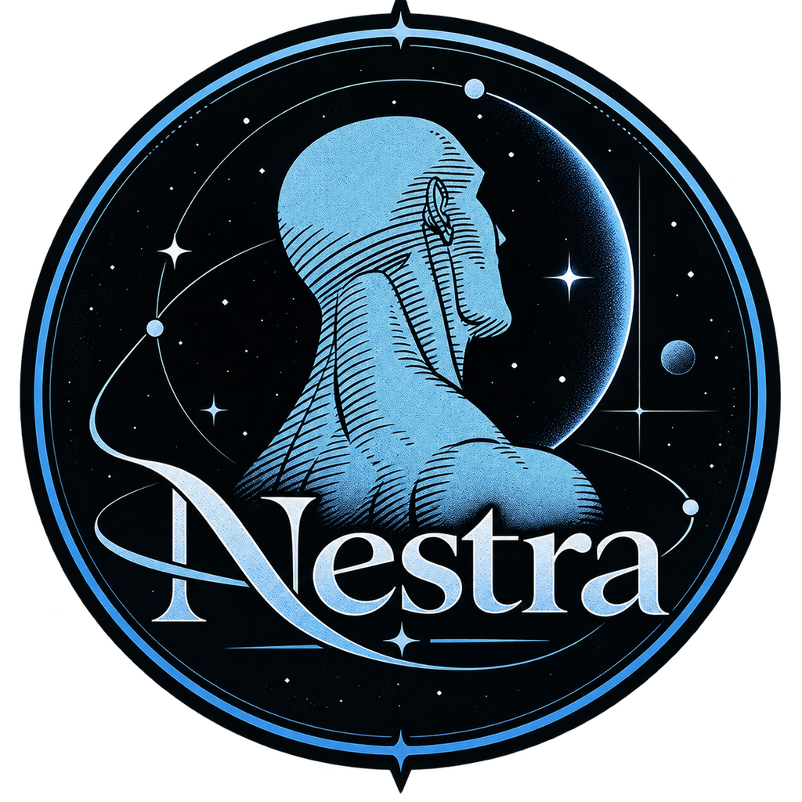

Capturar sem pensar demais
Uma caixa de texto única, com acesso imediato. O sistema registra primeiro e pergunta depois — uma frase nunca se perde porque a interpretação não foi perfeita.

NESTRA Entrar Criar contaO Nestra reduz a distância entre lembrar de algo e registrar esse algo corretamente. Escreva uma frase natural e siga com o seu dia — o sistema descobre o tipo, a data e o ambiente.
O que atrapalha não é a ausência de listas: é a dispersão de pequenas obrigações e ideias que surgem em momentos inadequados. Você lembra na quarta que precisa lavar o tênis no sábado, lembra no expediente que precisa anexar um atestado — e depois esquece parte disso.
Uma caixa de texto única, com acesso imediato. O sistema registra primeiro e pergunta depois — uma frase nunca se perde porque a interpretação não foi perfeita.
Trabalho, Estudos, Casa, um projeto paralelo. Cada área com sua tela, sua cor e seus itens. Sem método rígido, sem metodologia para aprender.
A tela principal responde a duas perguntas: o que você acabou de lembrar e o que merece sua atenção agora. O resto espera a sua vez.
O Nestra lê datas, horários, períodos do dia, prioridade e ambiente direto da frase. E respeita o que você não disse: se a frase for vaga, ele não inventa uma data.
A composição segue uma hierarquia simples:
Subtarefas e checklists existem, mas ficam escondidos até serem chamados. Assim “comprar benefício” não parece um projeto — e “atualizar o sistema” ainda cabe, com passos e observações.
Um ambiente é um espaço criado por você para representar uma área, contexto ou projeto. O Nestra sugere Trabalho, Estudos e Pessoal apenas como exemplos — todos editáveis, todos removíveis.
Toda entidade carrega uma referência ao dono, e a autorização acontece no servidor e no próprio banco — não só na interface. Ambientes, itens, checklists, preferências e histórico nunca ficam acessíveis só porque alguém conhece um identificador.
Políticas por linha no PostgreSQL: cada consulta é filtrada pelo usuário autenticado.
O front nunca recebe a credencial do banco. As requisições passam por uma camada que verifica a sessão.
Baixe tudo em JSON ou CSV quando quiser. Excluir a conta remove os dados — sem letras miúdas.
Organizar por ambiente, visualizar o hoje, respeitar o futuro — e não transformar a sua vida em uma planilha.
Criar minha conta